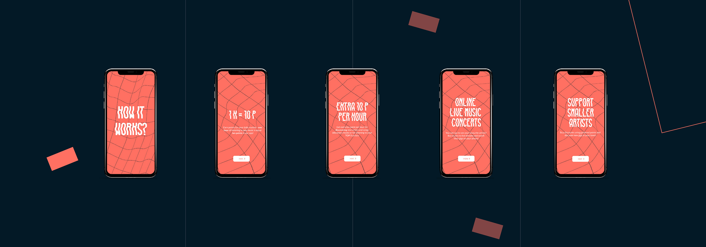

Image by Anna Ocipińska and Kat Szczesna. From project - Pointify (UX/UI 2019)
UX/UI
Design Studio
/
Brief
The UX of convenience
Dates
08.03.2021 - 08.06.2021
Unit Credits
40
Submission Type
Holistic
Submission
Online Submission 08.06.2021, by 15:00 GMT
Contact
idvc@arts.ac.uk
Hand in method
Electronic submission (via Moodle)
1 PDF document, maximum size 200MB
Aims + Context
This unit introduces you to both user experience design and user interface design and explores the relationship between the two.
You will be introduced to user-centred design methods and specific user testing approaches, processes and technologies in the context of interactive digital design. Working with the understanding gained from these processes you will apply your graphic design skills to the production of user interfaces for a range of digital interactive scenarios such as apps and websites. This approach aims to give you an understanding of the visual development of digital content from both a user centred and aesthetic perspective.
The Design School is committed to ecologically and socially responsible design. You can refer to the Responsible Design Framework and talk to your tutor about how your research and practice for this assignment can follow sustainable processes and have positive impact.
Brief: The UX Of Convenience
Design a way to address the negative impacts of convenience consumerism.
Globalised supply chains and international trade have made it possible for consumers to access an ever growing range of products from around the world whilst rapid online delivery services have given us a sense that our needs can be met almost instantaneously. The common UX design goals are often to support these two characteristics of managing choice and delivering immediacy.
This profitable culture of convenience has lead to significant undesirable consequences for our natural world, such as the proliferation of illegal logging of European forests that provide wood for cheap furniture or the levelling of vast areas of Amazon rainforest to meet the demand for palm oil, soy, bananas, coffee or citrus fruits.
At the other end of the supply chain our shopping habits have changed with online delivery becoming faster and more regular. The increase in purchases and repeated delivery attempts mean increases in delivery vehicles on the road adding to congestion, air pollution and global warming.
The UX of commerce is often about reducing friction and increasing access to products, which appeals to the desire for immediate gratification, however the needs, desires and motivations of the user are often much more complex and nuanced than this. There is a growing awareness of our impact on the environment and this is already changing habits and behaviours. Your challenge in this brief is not to blame or shame individuals, but to empower them and/or to help positively support changes to the system of convenience consumerism.
Martin, B. & Hanignton, B.
Universal Methods of Design: 100 ways to research complex problems, develop innovative ideas, and design effective solutions
Rockport Publishers
Queensbury, B. & Brooks, K.
Storytelling for User Experience: Crafting Stories for Better Design
Garrett, JJ.
The Elements of User Experience : user-centered design for the Web and beyond
The unit learning outcomes and how they can be evidenced
On completion of this unit you will be able to:
You will show evidence of this by:
Demonstrate an awareness of user testing approaches, processes and technologies in the context of interactive digital design. (Enquiry)
Your design will show how you have tested and evaluated your design in cooperation with its intended audience. You will show how you have identified this audience and gained an understanding of their needs.
Demonstrate the ability to make decisions based on user centred design methods ,while considering the impact of those decisions on other individuals, groups or the communities. (Enquiry)
User centred design methods such as workshops, scenario building, participative situations, and interviews will be evidenced in your submission. You will document these and reflect on their role in your project.
Demonstrate an awareness of fundamental principles of both user experience and user interface design. (Knowledge)
Your design will demonstrate how you have integrated your understanding of experience design and how that experience is delivered.
Experiment with a variety of centred approaches to develop digital design solutions, while considering their social or environmental impact. (Process)
You will provide evidence of creative risk taking and show how these risks have informed your final design outcome
Present digital solutions to peers and articulate your thinking using user perspectives. (Communication)
You will provide evidence of creative risk taking and show how these risks have informed your final design outcome
Demonstrate an ability to engage with complex digital development processes and deliver agreed outcomes. (Process, Realisation)
You will show an awareness of the realities of digital development, understanding any technical and time limitations you may encounter. You will show how you have worked within and around these to deliver projects with a high level of finish and underlying user awareness.
Portfolio of work: documenting the outcomes for the set project
work. This will also include a process blog and/or sketchbook
documenting your iterative design and development process
specifically in the areas of graphic design and information
visualisation.